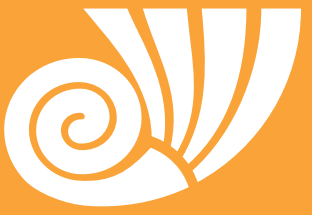
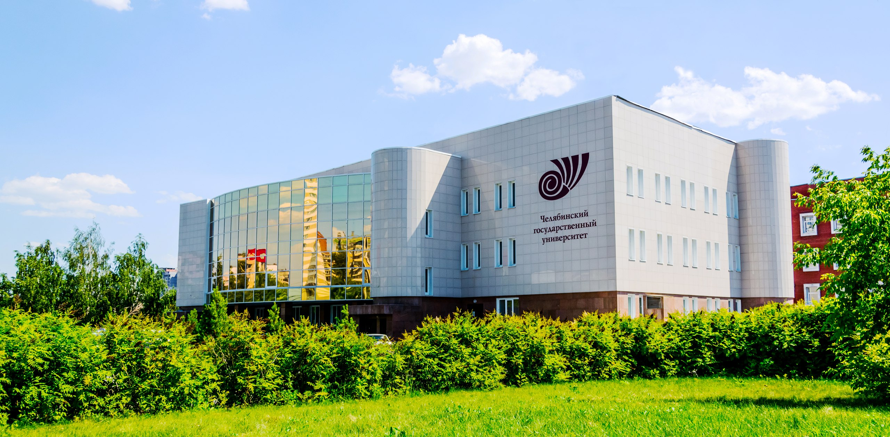

Chelyabinsk State University
CSU


International Scientific Conference
"PERSONALITY IN NORM AND IN PATHOLOGY"
April 22-23, 2021
About Conference
Despite the wide studying the phenomenon of personality by psychologists all over the world, the problem of its development remains open, since ideas about the development of the personality and the boundaries of "norm and pathology" tend to change both
in the historical and cultural perspective, to be reviewed and rethought. This problem is of interest both in theory and in its practical application.
The purpose of the Conference
Is to discuss modern basic ideas about personality and its development in norm and in pathology.
Information
The following issues:
- Personal Development in a Changing World
- Mental health at the face of global challenges
- Personality in the Educational Space
- Personality in an Aging Society
- Personality in Economics and Politics
- Development of a Personality with Special Needs
- Personality in digitalization
Participants:
Scientists, scholars, graduate students, doctoral students, practitioners, leading scientific research and practical activities in the field of psychology, psychotherapy, defectology, social services of the population.
Forms of participating:
part-time.
Conference working languages:
Russian, English.
Conference forms:
Plenary sessions, parallel sessions, master classes, round tables.
Publishing opportunities
The Conference materials will be published in the form of an abstracts in Russian or English in the Conference Books of Abstracts (with assignment of ISBN, UDC, BBC and registration with the RSCI). Full papers can be published in English in the EUROPEAN
PROCEEDINGS JOURNAL indexing in the Web of Science.
Abstract requirements
- 100 - 250 words length
- The relevance of the study, its purpose, research sample, main diagnostic procedures, main results and conclusions are indicated.
- Keywords: max 7.
Requirements for the full paper
- The article must contain original material and be written in good English.
- The title of the article is a maximum of 12 words
- Abstract 150 - 250 words
- The article contains the following sections: Introduction, Problem Statement, Research Questions, Research Objective, Research Methods, Results, Conclusion, Acknowledgments (if available), and References
- The reference list complies with the requirements of APA 7 and contains a complete list of links used in the full text.
Program
There will be a program, but it is not yet available
Organizational committee
L.N. Aksenovskaya,
Doctor of Psychological Sciences, Professor, Chernyshevsky Saratov National Research State University
O.S. Deyneka,
Doctor of Psychological Sciences, Full Professor, St. Petersburg State University
I. V. Dubrovina,
Doctor of Psychological Sciences, Professor, Corresponding Member of the Russian Academy of Education (1995), Psychological Institute of Russian Academy of Education
S.L. Solovyova,
Doctor of Psychological Sciences, Professor, I.I. Mechnikova Northwestern State Medical University
T.S. Ovchinnikova,
Doctor of Pedagogical Sciences, Pushkin Leningrad State University
S.V. Duhnovsky,
Doctor of Psychological Sciences, Professor, Ugra State University
V.S. Krasnik,
Ph.D., Center for Emergency Psychological Assistance "Alice ", Israel
S.A. Repin,
Doctor of Pedagogical Sciences, Professor, Chelyabinsk State University
L.S. Rychkova,
Doctor of Medical Sciences, Professor, South Ural State University
I.A. Trushina,
Candidate of Pedagogical Sciences, Chelyabinsk State University
M.V. Ovchinnikov,
Candidate of Psychological Sciences, Chelyabinsk State University
S.A. Kurnosova,
Candidate of Pedagogical Sciences, Chelyabinsk State University
E.V. Zabelina,
Candidate of Psychological Sciences, Chelyabinsk State University
V.G. Ragozinskaya,
Candidate of Psychological Sciences, Chelyabinsk State University
Dr. Ricardo Pérez-Luco Arenas,
Professor of Legal and Forensic Psychology, Universidad de La Frontera, Chile
Dr. Erich Kirchler,
Professor of Economic Psychology, University of Vienna, Austria
Dr. Michael Wang,
Emeritus Professor of Clinical Psychology, University of Leicester, United Kingdom
Venue
FSBEI HE "CSU"
st. Kashirin Brothers, 129
Chelyabinsk
Russia
Chelyabinsk State University
Conference Fee
Date
Participation in the conference and publication of abstracts in the electronic collection
is free.
Payment of travel and accommodation - at the expense of the
conference participants.
Payment for the publication of the full paper in EUROPEAN PROCEEDINGS JOURNAL indexing in
Web of Science after review process is 105 Euros.
01.11.2020
Submission of abstracts
10.11.2020
Notification of the acceptance of the abstracts
25.12.2020
Submission of full papers
15.01.2021
Notification of the acceptance of full papers
01.02.2021
Registration is completed. Conference fee payment (if choosing the publication in EUROPEAN PROCEEDINGS JOURNAL indexing in Web of Science)
08.04.2020
Final Conference Program
22-23.04.2021
Holding of the Conference
Submit full paper
Contacts
✉ E-mail: kpdcsu@gmail.com
☎ Tel.: (351) 799-72-68 – from 08.00 to 14.00 Moscow time, except for weekends.
👤 Ovchinnikov Mikhail Vladimirovich, head of the department of special and clinical psychology;
👤 Epimakhova Elizabeth, technical secretary.